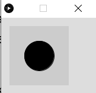

Functies
Zoals eerder gezegd hoef je veel dingen niet helemaal zelf te programmeren. Processing heeft al een hele hoop standaard 'dingen' beschikbaar. In de Reference (Processing Reference) vind je deze terug.
Deze 'dingen' worden functies genoemd. Een functie is eigenlijk 1 of meer instructies, die samen een bepaalde handeling uitvoeren. Het is makkelijker om dit duidelijk te maken met een voorbeeld.
Neem bijvoorbeeld de functie circle(x, y, d). Deze functie tekent een cirkel met als middelpunt (x,y) en diameter d.
Probeer maar.
Type circle(50, 50, 50); in de editor en klik op de Run-button. Het resultaat ziet er dan zo uit:
 |
Let op de accolade (;) aan het eind van een regel is belangrijk. Zo weet Processing ook dat de regel daar eindigt. Anders leest het gewoon door op de volgende regels, en beschouwt dat dan als 1 lange regel.
Er wordt een cirkel met straal 50 getekend, precies midden in het venster.
Om de kleur en de rand van de cirkel te veranderen, bestaan er andere functies die dit voor je kunnen doen. Hierover later meer.
Door andere waarden mee te geven, kun je cirkels van verschillende groottes en op verschillende posities tekenen. Aan deze functies kun je dus zelf niets veranderen door instructies toe te voegen.
Processing heeft ook een aantal functies die je wel zelf invulling moet geven. De belangrijkste 2 functies zijn de setup() en de draw(). Deze worden door Processing zelf aangeroepen, bij het starten en runnen van het programma. De setup() wordt eerst, eenmalig, uitgevoerd, hierin kun je dus dingen doen die eenmalig uitgevoerd moeten worden, zoals de grootte van het scherm opgeven. De draw() zorgt voor het tekenen van het venster, deze wordt dus 60 keer per seconde uitgevoerd. In de schermafbeelding op de volgende bladzijde zie je hoe dat eruit ziet.
Wat er binnen deze functies uitgevoerd wordt, dat moeten we zelf programmeren. In deze functies komt het grootste gedeelte van ons algoritme terecht.

De functies die we gaan gebruiken zijn:
size(b, h) Geeft het venster de breedte b en de hoogte h.
background(r, g, b) Geeft de achtergrond van het venster een rgb kleur (rgb staat voor: red, green, blue). De r,g en b waarde is een getal tussen de 0 en 255. En geeft de mate aan waarin de kleuren rood, groen en blauw in het kleurmengsel aanwezig zijn. Dus 0,0,0 is zwart (afwezigheid van alle kleuren) en 255,255,255 is wit (aanwezigheid van alle kleuren in maximale hoeveelheid).
text("text", x, y) Print de tekst "text" op positie (x,y)
textSize(s) Zet de lettergrootte op s pixels
textAlign(LEFT) Zorgt ervoor dat de tekst links wordt uitgelijnd. Dit betekent in dit geval dat de tekst begint op positie (x,y) en dan naar rechts wordt geschreven. Let op: LEFT moet ook echt in hoofdletters geschreven worden.
textAlign(CENTER, CENTER) Zorgt ervoor dat een tekst zodanig geschreven wordt dat het punt (x,y) precies in het midden/centrum van de tekst is.
fill(r, g, b) Deze functie bepaalt de kleur waarmee de daaropvolgende figuur of tekst wordt geschreven. Dus als je een zwarte cirkel wilt tekenen midden in het standaard scherm dan wordt het:
fill(0, 0, 0);
circle(50, 50, 50);
  Een rode cirkel wordt dan:
fill(255, 0, 0);
circle(50, 50, 50);
 

circle(x, y, d) Tekent een cirkel met diameter d op positie (x,y).
rect(x, y, b, h, r) Tekent een rechthoek met de linker-boven hoek op positie (x,y) en een breedte b en hoogte h. De r geeft de ronding van de hoeken aan (0 is een rechte hoek)
rectMode(CENTER) Zorgt ervoor dat het punt (x,y) precies in het midden(centrum) van de rechthoek uitgelijnd wordt. Vergelijkbaar met textMode(CENTER, CENTER).
random(min, max) Deze functie geeft een willekeurig getal terug tussen de waarden min en max. B.v. zou random(0, 10) het getal 4,15389 terug kunnen geven. Maar als ik hetzelfde nog een keer uitvoer kan er een heel ander getal uitkomen. Niet te voorspellen dus, oftewel willekeurig (= random).
millis() Bepaalt het aantal verstreken milliseconden sinds het opstarten van het spel.
dist(x1, y1, x2, y2) Berekent de afstand tussen de punten (x1,y1) en (x2,y2)
Dit zijn voor nu even de belangrijkste bouwstenen voor ons, om een start te maken met ons spel. Later zullen we de cirkels gaan vervangen door plaatjes (images), m.b.v. de volgende functies.
image(img, x, y, h, b) Tekent het plaatje img op positie (x, y) met een hoogte van h en een breedte van b.
loadImage("filename.png") Laadt een afbeelding/plaatje in. Deze is van het type png, gif of jpg.
imageMode(CENTER) Zorgt ervoor dat het punt (x,y) precies in het midden van het plaatje is.
In Bijlage D staan alle functies van Processing die we gaan gebruiken nog iets uitgebreider uitgelegd (vertaling van Reference Processing)